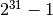
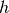
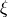

6.1. Feature extraction¶
The sklearn.feature_extraction module can be used to extract features in a format supported by machine learning algorithms from datasets consisting of formats such as text and image.
Note
Feature extraction is very different from Feature selection: the former consists in transforming arbitrary data, such as text or images, into numerical features usable for machine learning. The latter is a machine learning technique applied on these features.
6.1.1. Loading features from dicts¶
The class DictVectorizer can be used to convert feature arrays represented as lists of standard Python dict objects to the NumPy/SciPy representation used by scikit-learn estimators.
While not particularly fast to process, Python’s dict has the advantages of being convenient to use, being sparse (absent features need not be stored) and storing feature names in addition to values.
DictVectorizer implements what is called one-of-K or “one-hot” coding for categorical (aka nominal, discrete) features. Categorical features are “attribute-value” pairs where the value is restricted to a list of discrete of possibilities without ordering (e.g. topic identifiers, types of objects, tags, names...).
In the following, “city” is a categorical attribute while “temperature” is a traditional numerical feature:
>>> measurements = [
... {'city': 'Dubai', 'temperature': 33.},
... {'city': 'London', 'temperature': 12.},
... {'city': 'San Fransisco', 'temperature': 18.},
... ]
>>> from sklearn.feature_extraction import DictVectorizer
>>> vec = DictVectorizer()
>>> vec.fit_transform(measurements).toarray()
array([[ 1., 0., 0., 33.],
[ 0., 1., 0., 12.],
[ 0., 0., 1., 18.]])
>>> vec.get_feature_names()
['city=Dubai', 'city=London', 'city=San Fransisco', 'temperature']
DictVectorizer is also a useful representation transformation for training sequence classifiers in Natural Language Processing models that typically work by extracting feature windows around a particular word of interest.
For example, suppose that we have a first algorithm that extracts Part of Speech (PoS) tags that we want to use as complementary tags for training a sequence classifier (e.g. a chunker). The following dict could be such a window of features extracted around the word ‘sat’ in the sentence ‘The cat sat on the mat.’:
>>> pos_window = [
... {
... 'word-2': 'the',
... 'pos-2': 'DT',
... 'word-1': 'cat',
... 'pos-1': 'NN',
... 'word+1': 'on',
... 'pos+1': 'PP',
... },
... # in a real application one would extract many such dictionaries
... ]
This description can be vectorized into a sparse two-dimensional matrix suitable for feeding into a classifier (maybe after being piped into a text.TfidfTransformer for normalization):
>>> vec = DictVectorizer()
>>> pos_vectorized = vec.fit_transform(pos_window)
>>> pos_vectorized
<1x6 sparse matrix of type '<type 'numpy.float64'>'
with 6 stored elements in Compressed Sparse Row format>
>>> pos_vectorized.toarray()
array([[ 1., 1., 1., 1., 1., 1.]])
>>> vec.get_feature_names()
['pos+1=PP', 'pos-1=NN', 'pos-2=DT', 'word+1=on', 'word-1=cat', 'word-2=the']
As you can imagine, if one extracts such a context around each individual word of a corpus of documents the resulting matrix will be very wide (many one-hot-features) with most of them being valued to zero most of the time. So as to make the resulting data structure able to fit in memory the DictVectorizer class uses a scipy.sparse matrix by default instead of a numpy.ndarray.
6.1.2. Feature hashing¶
The class FeatureHasher is a high-speed, low-memory vectorizer that uses a technique known as feature hashing, or the “hashing trick”. Instead of building a hash table of the features encountered in training, as the vectorizers do, instances of FeatureHasher apply a hash function to the features to determine their column index in sample matrices directly. The result is increased speed and reduced memory usage, at the expense of inspectability; the hasher does not remember what the input features looked like and has no inverse_transform method.
Since the hash function might cause collisions between (unrelated) features, a signed hash function is used and the sign of the hash value determines the sign of the value stored in the output matrix for a feature. This way, collisions are likely to cancel out rather than accumulate error, and the expected mean of any output feature’s value is zero.
If non_negative=True is passed to the constructor, the absolute value is taken. This undoes some of the collision handling, but allows the output to be passed to estimators like MultinomialNB or chi2 feature selectors that expect non-negative inputs.
FeatureHasher accepts either mappings (like Python’s dict and its variants in the collections module), (feature, value) pairs, or strings, depending on the constructor parameter input_type. Mapping are treated as lists of (feature, value) pairs, while single strings have an implicit value of 1, so ['feat1', 'feat2', 'feat3'] is interpreted as [('feat1', 1), ('feat2', 1), ('feat3', 1)]. If a single feature occurs multiple times in a sample, the associated values will be summed (so ('feat', 2) and ('feat', 3.5) become ('feat', 5.5)). The output from FeatureHasher is always a scipy.sparse matrix in the CSR format.
Feature hashing can be employed in document classification, but unlike text.CountVectorizer, FeatureHasher does not do word splitting or any other preprocessing except Unicode-to-UTF-8 encoding; see Vectorizing a large text corpus with the hashing trick, below, for a combined tokenizer/hasher.
As an example, consider a word-level natural language processing task that needs features extracted from (token, part_of_speech) pairs. One could use a Python generator function to extract features:
def token_features(token, part_of_speech):
if token.isdigit():
yield "numeric"
else:
yield "token={}".format(token.lower())
yield "token,pos={},{}".format(token, part_of_speech)
if token[0].isupper():
yield "uppercase_initial"
if token.isupper():
yield "all_uppercase"
yield "pos={}".format(part_of_speech)
Then, the raw_X to be fed to FeatureHasher.transform can be constructed using:
raw_X = (token_features(tok, pos_tagger(tok)) for tok in corpus)
and fed to a hasher with:
hasher = FeatureHasher(input_type=string)
X = hasher.transform(raw_X)
to get a scipy.sparse matrix X.
Note the use of a generator comprehension, which introduces laziness into the feature extraction: tokens are only processed on demand from the hasher.
6.1.2.1. Implementation details¶
FeatureHasher uses the signed 32-bit variant of MurmurHash3. As a result (and because of limitations in scipy.sparse), the maximum number of features supported is currently .
The original formulation of the hashing trick by Weinberger et al. used two separate hash functions  and  to determine the column index and sign of a feature, respectively. The present implementation works under the assumption that the sign bit of MurmurHash3 is independent of its other bits.
Since a simple modulo is used to transform the hash function to a column index, it is advisable to use a power of two as the n_features parameter; otherwise the features will not be mapped evenly to the columns.
References:
- Kilian Weinberger, Anirban Dasgupta, John Langford, Alex Smola and Josh Attenberg (2009). Feature hashing for large scale multitask learning. Proc. ICML.
- MurmurHash3.
6.1.3. Text feature extraction¶
6.1.3.1. The Bag of Words representation¶
Text Analysis is a major application field for machine learning algorithms. However the raw data, a sequence of symbols cannot be fed directly to the algorithms themselves as most of them expect numerical feature vectors with a fixed size rather than the raw text documents with variable length.
In order to address this, scikit-learn provides utilities for the most common ways to extract numerical features from text content, namely:
- tokenizing strings and giving an integer id for each possible token, for instance by using whitespaces and punctuation as token separators.
- counting the occurrences of tokens in each document.
- normalizing and weighting with diminishing importance tokens that occur in the majority of samples / documents.
In this scheme, features and samples are defined as follows:
- each individual token occurrence frequency (normalized or not) is treated as a feature.
- the vector of all the token frequencies for a given document is considered a multivariate sample.
A corpus of documents can thus be represented by a matrix with one row per document and one column per token (e.g. word) occurring in the corpus.
We call vectorization the general process of turning a collection of text documents into numerical feature vectors. This specific stragegy (tokenization, counting and normalization) is called the Bag of Words or “Bag of n-grams” representation. Documents are described by word occurrences while completely ignoring the relative position information of the words in the document.
6.1.3.2. Sparsity¶
As most documents will typically use a very subset of a the words used in the corpus, the resulting matrix will have many feature values that are zeros (typically more than 99% of them).
For instance a collection of 10,000 short text documents (such as emails) will use a vocabulary with a size in the order of 100,000 unique words in total while each document will use 100 to 1000 unique words individually.
In order to be able to store such a matrix in memory but also to speed up algebraic operations matrix / vector, implementations will typically use a sparse representation such as the implementations available in the scipy.sparse package.
6.1.3.3. Common Vectorizer usage¶
CountVectorizer implements both tokenization and occurrence counting in a single class:
>>> from sklearn.feature_extraction.text import CountVectorizer
This model has many parameters, however the default values are quite reasonable (please see the reference documentation for the details):
>>> vectorizer = CountVectorizer(min_df=1)
>>> vectorizer
CountVectorizer(analyzer=u'word', binary=False, charset=u'utf-8',
charset_error=u'strict', dtype=<type 'numpy.int64'>,
input=u'content', lowercase=True, max_df=1.0, max_features=None,
min_df=1, ngram_range=(1, 1), preprocessor=None,
stop_words=None, strip_accents=None,
token_pattern=u'(?u)\\b\\w\\w+\\b', tokenizer=None, vocabulary=None)
Let’s use it to tokenize and count the word occurrences of a minimalistic corpus of text documents:
>>> corpus = [
... 'This is the first document.',
... 'This is the second second document.',
... 'And the third one.',
... 'Is this the first document?',
... ]
>>> X = vectorizer.fit_transform(corpus)
>>> X
<4x9 sparse matrix of type '<type 'numpy.int64'>'
with 19 stored elements in Compressed Sparse Column format>
The default configuration tokenizes the string by extracting words of at least 2 letters. The specific function that does this step can be requested explicitly:
>>> analyze = vectorizer.build_analyzer()
>>> analyze("This is a text document to analyze.")
[u'this', u'is', u'text', u'document', u'to', u'analyze']
Each term found by the analyzer during the fit is assigned a unique integer index corresponding to a column in the resulting matrix. This interpretation of the columns can be retrieved as follows:
>>> vectorizer.get_feature_names()
[u'and', u'document', u'first', u'is', u'one', u'second', u'the', u'third', u'this']
>>> X.toarray()
array([[0, 1, 1, 1, 0, 0, 1, 0, 1],
[0, 1, 0, 1, 0, 2, 1, 0, 1],
[1, 0, 0, 0, 1, 0, 1, 1, 0],
[0, 1, 1, 1, 0, 0, 1, 0, 1]]...)
The converse mapping from feature name to column index is stored in the vocabulary_ attribute of the vectorizer:
>>> vectorizer.vocabulary_.get('document')
1
Hence words that were not seen in the training corpus will be completely ignored in future calls to the transform method:
>>> vectorizer.transform(['Something completely new.']).toarray()
...
array([[0, 0, 0, 0, 0, 0, 0, 0, 0]]...)
Note that in the previous corpus, the first and the last documents have exactly the same words hence are encoded in equal vectors. In particular we lose the information that the last document is an interogative form. To preserve some of the local ordering information we can extract 2-grams of words in addition to the 1-grams (the word themselvs):
>>> bigram_vectorizer = CountVectorizer(ngram_range=(1, 2),
... token_pattern=ur'\b\w+\b', min_df=1)
>>> analyze = bigram_vectorizer.build_analyzer()
>>> analyze('Bi-grams are cool!')
[u'bi', u'grams', u'are', u'cool', u'bi grams', u'grams are', u'are cool']
The vocabulary extracted by this vectorizer is hence much bigger and can now resolve ambiguities encoded in local positioning patterns:
>>> X_2 = bigram_vectorizer.fit_transform(corpus).toarray()
>>> X_2
...
array([[0, 0, 1, 1, 1, 1, 1, 0, 0, 0, 0, 0, 1, 1, 0, 0, 0, 0, 1, 1, 0],
[0, 0, 1, 0, 0, 1, 1, 0, 0, 2, 1, 1, 1, 0, 1, 0, 0, 0, 1, 1, 0],
[1, 1, 0, 0, 0, 0, 0, 0, 1, 0, 0, 0, 1, 0, 0, 1, 1, 1, 0, 0, 0],
[0, 0, 1, 1, 1, 1, 0, 1, 0, 0, 0, 0, 1, 1, 0, 0, 0, 0, 1, 0, 1]]...)
In particular the interogative form “Is this” is only present in the last document:
>>> feature_index = bigram_vectorizer.vocabulary_.get(u'is this')
>>> X_2[:, feature_index]
array([0, 0, 0, 1]...)
6.1.3.4. Tf–idf term weighting¶
In a large text corpus, some words will be very present (e.g. “the”, “a”, “is” in English) hence carrying very little meaningul information about the actual contents of the document. If we were to feed the direct count data directly to a classifier those very frequent terms would shadow the frequencies of rarer yet more interesting terms.
In order to re-weight the count features into floating point values suitable for usage by a classifier it is very common to use the tf–idf transform.
Tf means term-frequency while tf–idf means term-frequency times inverse document-frequency. This is a originally a term weighting scheme developed for information retrieval (as a ranking function for search engines results), that has also found good use in document classification and clustering.
This normalization is implemented by the text.TfidfTransformer class:
>>> from sklearn.feature_extraction.text import TfidfTransformer
>>> transformer = TfidfTransformer()
>>> transformer
TfidfTransformer(norm=u'l2', smooth_idf=True, sublinear_tf=False,
use_idf=True)
Again please see the reference documentation for the details on all the parameters.
Let’s take an example with the following counts. The first term is present 100% of the time hence not very interesting. The two other features only in less than 50% of the time hence probably more representative of the content of the documents:
>>> counts = [[3, 0, 1],
... [2, 0, 0],
... [3, 0, 0],
... [4, 0, 0],
... [3, 2, 0],
... [3, 0, 2]]
...
>>> tfidf = transformer.fit_transform(counts)
>>> tfidf
<6x3 sparse matrix of type '<type 'numpy.float64'>'
with 9 stored elements in Compressed Sparse Row format>
>>> tfidf.toarray()
array([[ 0.85..., 0. ..., 0.52...],
[ 1. ..., 0. ..., 0. ...],
[ 1. ..., 0. ..., 0. ...],
[ 1. ..., 0. ..., 0. ...],
[ 0.55..., 0.83..., 0. ...],
[ 0.63..., 0. ..., 0.77...]])
Each row is normalized to have unit euclidean norm. The weights of each feature computed by the fit method call are stored in a model attribute:
>>> transformer.idf_
array([ 1. ..., 2.25..., 1.84...])
As tf–idf is a very often used for text features, there is also another class called TfidfVectorizer that combines all the option of CountVectorizer and TfidfTransformer in a single model:
>>> from sklearn.feature_extraction.text import TfidfVectorizer
>>> vectorizer = TfidfVectorizer(min_df=1)
>>> vectorizer.fit_transform(corpus)
...
<4x9 sparse matrix of type '<type 'numpy.float64'>'
with 19 stored elements in Compressed Sparse Row format>
While the tf–idf normalization is often very useful, there might be cases where the binary occurrence markers might offer better features. This can be achieved by using the binary parameter of CountVectorizer. In particular, some estimators such as Bernoulli Naive Bayes explicitly model discrete boolean random variables. Also, very short text are likely to have noisy tf–idf values while the binary occurrence info is more stable.
As usual the only way how to best adjust the feature extraction parameters is to use a cross-validated grid search, for instance by pipelining the feature extractor with a classifier:
6.1.3.5. Applications and examples¶
The bag of words representation is quite simplistic but surprisingly useful in practice.
In particular in a supervised setting it can be successfully combined with fast and scalable linear models to train document classificers, for instance:
In an unsupervised setting it can be used to group similar documents together by applying clustering algorithms such as K-means:
Finally it is possible to discover the main topics of a corpus by relaxing the hard assignment constraint of clustering, for instance by using Non-negative matrix factorization (NMF or NNMF):
6.1.3.6. Limitations of the Bag of Words representation¶
A collection of unigrams (what bag of words is) cannot capture phrases and multi-word expressions, effectively disregarding any word order dependence. Additionally, bag of words model doesn’t account for potential misspellings or word derivations.
N-grams to the rescue! Instead of building a simple collection of unigrams (n=1), one might prefer a collection of bigrams (n=2), where occurrences of pairs of consecutive words are counted.
One might alternatively consider a collection of character n-grams, a representation resiliant against misspellings and derivations.
For example, let’s say we’re dealing with a corpus of two documents: ['words', 'wprds']. The second document contains a misspelling of the word ‘words’. A simple bag of words representation would consider these two as very distinct documents, differing in both of the two possible features. A character 2-gram representation, however, would find the documents matching in 4 out of 8 features, which may help the preferred classifier decide better:
>>> ngram_vectorizer = CountVectorizer(analyzer='char_wb', ngram_range=(2, 2), min_df=1)
>>> counts = ngram_vectorizer.fit_transform(['words', 'wprds'])
>>> ngram_vectorizer.get_feature_names()
[u' w', u'ds', u'or', u'pr', u'rd', u's ', u'wo', u'wp']
>>> counts.toarray().astype(int)
array([[1, 1, 1, 0, 1, 1, 1, 0],
[1, 1, 0, 1, 1, 1, 0, 1]])
In above example, 'char_wb analyzer is used, which creates n-grams only from characters inside word boundaries (padded with space on each side). The 'char' analyzer, alternatively, creates n-grams that span across words:
>>> ngram_vectorizer = CountVectorizer(analyzer='char_wb', ngram_range=(5, 5), min_df=1)
>>> ngram_vectorizer.fit_transform(['jumpy fox'])
...
<1x4 sparse matrix of type '<type 'numpy.int64'>'
with 4 stored elements in Compressed Sparse Column format>
>>> ngram_vectorizer.get_feature_names()
[u' fox ', u' jump', u'jumpy', u'umpy ']
>>> ngram_vectorizer = CountVectorizer(analyzer='char', ngram_range=(5, 5), min_df=1)
>>> ngram_vectorizer.fit_transform(['jumpy fox'])
...
<1x5 sparse matrix of type '<type 'numpy.int64'>'
with 5 stored elements in Compressed Sparse Column format>
>>> ngram_vectorizer.get_feature_names()
[u'jumpy', u'mpy f', u'py fo', u'umpy ', u'y fox']
The word boundaries-aware variant char_wb is especially interesting for languages that use whitespaces for word separation as it generates significantly less noisy features than the raw char variant in that case. For such languages it can increase both the predictive accuracy and convergence speed of classifiers trained using such features while retaining the robustness w.r.t. misspellings and word derivations.
While some local positioning information can be preserved by extracting n-grams instead of individual words, bag of words and bag of n-grams destroy most of the inner structure of the document and hence most of the meaning carried by that internal structure.
In order to address the wider task of Natural Language Understanding, the local structure of sentences and paragraphs should thus be taken into account. Many such models will thus be casted as “Structured output” problems which are currently outside of the scope of scikit-learn.
6.1.3.7. Vectorizing a large text corpus with the hashing trick¶
The above vectorization scheme is simple but the fact that it holds an in- memory mapping from the string tokens to the integer feature indices (the vocabulary_ attribute) causes several problems when dealing with large datasets:
- the larger the corpus, the larger the vocabulary will grow and hence the memory use too,
- fitting requires the allocation of intermediate data structures of size proportional to that of the original dataset.
- building the word-mapping requires a full pass over the dataset hence it is not possible to fit text classifiers in a strictly online manner.
- pickling and un-pickling vectorizers with a large vocabulary_ can be very slow (typically much slower than pickling / un-pickling flat data structures such as a NumPy array of the same size),
- it is not easily possible to split the vectorization work into concurrent sub tasks as the vocabulary_ attribute would have to be a shared state with a fine grained synchronization barrier: the mapping from token string to feature index is dependent on ordering of the first occurrence of each token hence would have to be shared, potentially harming the concurrent workers’ performance to the point of making them slower than the sequential variant.
It is possible to overcome those limitations by combining the “hashing trick” (Feature hashing) implemented by the sklearn.feature_extraction.FeatureHasher class and the text preprocessing and tokenization features of the CountVectorizer.
This combination is implementing in HashingVectorizer, a transformer class that is mostly API compatible with CountVectorizer. HashingVectorizer is stateless, meaning that you don’t have to call fit on it:
>>> from sklearn.feature_extraction.text import HashingVectorizer
>>> hv = HashingVectorizer(n_features=10)
>>> hv.transform(corpus)
...
<4x10 sparse matrix of type '<type 'numpy.float64'>'
with 16 stored elements in Compressed Sparse Row format>
You can see that 16 non-zero feature tokens where extracted in the vector output: this is less than the 19 non-zeros extracted previously by the CountVectorizer on the same toy corpus. The discrepancy comes from hash function collisions because of the low value of the n_features parameter.
In a real world setting, the n_features parameter can be left to its default value of 2 ** 20 (roughly one million possible features). If memory or downstream models size is an issue selecting a lower value such as 2 ** 18 might help without introducing too many additional collisions on typical text classification tasks.
Note that the dimensionality does not affect the CPU training time of algorithms which operate on CSR matrices (LinearSVC(dual=True), Perceptron, SGDClassifier, PassiveAggressive) but it does for algorithm that work with CSC matrices (LinearSVC(dual=False), Lasso(), etc).
Let’s try again with the default setting:
>>> hv = HashingVectorizer()
>>> hv.transform(corpus)
...
<4x1048576 sparse matrix of type '<type 'numpy.float64'>'
with 19 stored elements in Compressed Sparse Row format>
We no longer get the collisions, but this comes at the expense of a much larger dimensionality of the output space. Of course, other terms than the 19 used here might still collide with each other.
The HashingVectorizer also comes with the following limitations:
- it is not possible to invert the model (no inverse_transform method), nor to access the original string representation of the features, because of the one-way nature of the hash function that performs the mapping.
- it does not provide IDF weighting as that would introduce statefulness in the model. A TfidfTransformer can be appended to it in a pipeline if required.
6.1.3.8. Customizing the vectorizer classes¶
It is possible to customize the behavior by passing a callable to the vectorizer constructor:
>>> def my_tokenizer(s):
... return s.split()
...
>>> vectorizer = CountVectorizer(tokenizer=my_tokenizer)
>>> vectorizer.build_analyzer()(u"Some... punctuation!")
[u'some...', u'punctuation!']
In particular we name:
- preprocessor: a callable that takes an entire document as input (as a single string), and returns a possibly transformed version of the document, still as an entire string. This can be used to remove HTML tags, lowercase the entire document, etc.
- tokenizer: a callable that takes the output from the preprocessor and splits it into tokens, then returns a list of these.
- analyzer: a callable that replaces the preprocessor and tokenizer. The default analyzers all call the preprocessor and tokenizer, but custom analyzers will skip this. N-gram extraction and stop word filtering take place at the analyzer level, so a custom analyzer may have to reproduce these steps.
(Lucene users might recognize these names, but be aware that scikit-learn concepts may not map one-to-one onto Lucene concepts.)
To make the preprocessor, tokenizer and analyzers aware of the model parameters it is possible to derive from the class and override the build_preprocessor, build_tokenizer` and build_analyzer factory methods instead of passing custom functions.
Some tips and tricks:
If documents are pre-tokenized by an external package, then store them in files (or strings) with the tokens separated by whitespace and pass analyzer=str.split
Fancy token-level analysis such as stemming, lemmatizing, compound splitting, filtering based on part-of-speech, etc. are not included in the scikit-learn codebase, but can be added by customizing either the tokenizer or the analyzer. Here’s a CountVectorizer with a tokenizer and lemmatizer using NLTK:
>>> from nltk import word_tokenize >>> from nltk.stem import WordNetLemmatizer >>> class LemmaTokenizer(object): ... def __init__(self): ... self.wnl = WordNetLemmatizer() ... def __call__(self, doc): ... return [self.wnl.lemmatize(t) for t in word_tokenize(doc)] ... >>> vect = CountVectorizer(tokenizer=LemmaTokenizer())(Note that this will not filter out punctuation.)
Customizing the vectorizer can also be useful when handling Asian languages that do not use an explicit word separator such as whitespace.
6.1.4. Image feature extraction¶
6.1.4.1. Patch extraction¶
The extract_patches_2d function extracts patches from an image stored as a two-dimensional array, or three-dimensional with color information along the third axis. For rebuilding an image from all its patches, use reconstruct_from_patches_2d. For example let use generate a 4x4 pixel picture with 3 color channels (e.g. in RGB format):
>>> import numpy as np
>>> from sklearn.feature_extraction import image
>>> one_image = np.arange(4 * 4 * 3).reshape((4, 4, 3))
>>> one_image[:, :, 0] # R channel of a fake RGB picture
array([[ 0, 3, 6, 9],
[12, 15, 18, 21],
[24, 27, 30, 33],
[36, 39, 42, 45]])
>>> patches = image.extract_patches_2d(one_image, (2, 2), max_patches=2,
... random_state=0)
>>> patches.shape
(2, 2, 2, 3)
>>> patches[:, :, :, 0]
array([[[ 0, 3],
[12, 15]],
[[15, 18],
[27, 30]]])
>>> patches = image.extract_patches_2d(one_image, (2, 2))
>>> patches.shape
(9, 2, 2, 3)
>>> patches[4, :, :, 0]
array([[15, 18],
[27, 30]])
Let us now try to reconstruct the original image from the patches by averaging on overlapping areas:
>>> reconstructed = image.reconstruct_from_patches_2d(patches, (4, 4, 3))
>>> np.testing.assert_array_equal(one_image, reconstructed)
The PatchExtractor class works in the same way as extract_patches_2d, only it supports multiple images as input. It is implemented as an estimator, so it can be used in pipelines. See:
>>> five_images = np.arange(5 * 4 * 4 * 3).reshape(5, 4, 4, 3)
>>> patches = image.PatchExtractor((2, 2)).transform(five_images)
>>> patches.shape
(45, 2, 2, 3)
6.1.4.2. Connectivity graph of an image¶
Several estimators in the scikit-learn can use connectivity information between features or samples. For instance Ward clustering (Hierarchical clustering) can cluster together only neighboring pixels of an image, thus forming contiguous patches:
For this purpose, the estimators use a ‘connectivity’ matrix, giving which samples are connected.
The function img_to_graph returns such a matrix from a 2D or 3D image. Similarly, grid_to_graph build a connectivity matrix for images given the shape of these image.
These matrices can be used to impose connectivity in estimators that use connectivity information, such as Ward clustering (Hierarchical clustering), but also to build precomputed kernels, or similarity matrices.